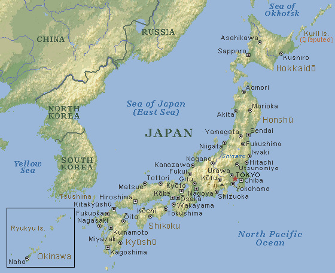

Uma breve história do Japão
Após a última idade do gelo, por volta de 12 000 AEC, o rico ecossistema do arquipélago japonês promoveu o desenvolvimento humano. O aparecimento das primeiras pessoas no Japão data do Paleolítico, há cerca de 35 000 anos. Entre 11 000 e 500 AEC, estes povos desenvolveram um tipo de cerâmica designada de Jomon, a qual é considerada das mais antigas do mundo. Posteriormente surgiu uma cultura conhecida como Yayoi, onde a produção de ferramentas de metal, assim como o cultivo do arroz, foram um importante progresso. Neste período existiram várias tribos, porém foi no período Yamato que se fez notar maior predominância de povos. Séculos depois, os governantes deste período reforçaram a posição do país e começaram a disseminar-se por todo o arquipélago sob um sistema centralizado, comprimindo as inúmeras tribos existentes e alegando a própria ascendência divina. Entretanto, o governo central havia começado a assimilar os costumes próprios da Coreia e da China. Esta rápida imposição de tradições estrangeiras, contudo, produziu uma certa tensão na sociedade japonesa e, no ano 794, a corte imperial fundou uma nova capital, Heian-kyō (actual Quioto), dando origem a uma cultura aperfeiçoada da aristocracia. Apesar disso, o sistema centralizado fracassou nas províncias e iniciou-se um processo de privatização de terras, dando origem a um colapso na administração e ordem públicas. A aristocracia necessitava então da ajuda de guerreiros para proteger a suas propriedades - mais tarde denominada a classe samurai.
Em 1192, Minamoto no Yoritomo foi nomeado xogum (ditador militar) do Japão pelo imperador, marcando o início do regime feudal xogunato (ou bakufu) Kamakura, uma instituição militar permanente que governaria durante quase setecentos anos. A corte viu assim o seu poder transferir-se para os samurais sob tal regime militar. A eclosão da Guerra de Ōnin em 1467 provocou uma série de guerras que se estenderam por todo o Japão, num período que culminou em 1573, quando Oda Nobunaga iniciou uma unificação do país que não foi concluída devido à traição de um dos seus principais generais. O imperador foi morto e Toyotomi Hideyoshi vingou a sua morte, completando a unificação em 1590. Depois disto, o país ficou novamente dividido em dois lados: os que apoiavam o seu filho Toyotomi Hideyori e os que apoiavam um dos principais daimyos, Tokugawa Ieyasu. As duas vertentes enfrentaram-se então durante a Batalha de Sekigahara, da qual leyasu saiu vencedor e foi oficialmente nomeado xogum em 1603, instaurando-se o Xogunato Tokugawa. O período Edo caracteriza-se por ter sido uma época de paz e pela implementação de uma nova política de relações internacionais que evitou o contacto com o exterior. Este isolamento teve o seu término em 1853, quando Matthew Calbraith Perry forçou o Japão a abrir portas e assinar uma série de tratados com as grandes potências estrangeiras (tratados desiguais), causando desconforto entre alguns samurais que apoiavam o imperador a favor da retomada do seu papel na política.

O último xogum Tokugawa renunciou ao cargo em 1868, dando início à era Meiji, em homenagem ao imperador Meiji que havia assumido o poder político. Iniciou-se então a modernização do país com a evacuação do sistema feudal e dos samurais, e com a transferência da capital para Tóquio. Um forte processo de ocidentalização teve lugar, e o Japão emergiu no mundo enquanto primeiro país asiático industrializado. O país encontrava-se num processo de expansionismo territorial sobre as nações vizinhas, o que originou conflitos com o Império Russo e o Império Chinês. Com a morte do imperador Meiji, o país havia se convertido numa nação moderna, industrializada, com um governo central, assim como uma superpotência na Ásia que rivalizava com o ocidente. Isto reflectiu-se numa explosão social devido ao crescimento económico e populacional. O império começou a conquistar terreno sob o extremismo político, sendo que em 1930 a expansão militar se acelerou e o país confrontou a China pela segunda vez. Após a eclosão da guerra na Europa, o Japão aproveitou-se da situação para ocupar outras áreas territoriais da Ásia. Durante o ano de 1941, as relações diplomáticas entre o Japão e os Estados Unidos complicaram-se quando o presidente dos EUA, Franklin Delano Roosevelt, interrompeu o fornecimento de petróleo para o Japão e congelou todos os créditos japoneses nos Estados Unidos. A 7 de dezembro de 1941 o Japão atacou Pearl Harbor, levando o país para a Segunda Grande Guerra enquanto parte das "Potências do Eixo". Apesar de uma série de vitórias iniciais, o Japão veio a sofrer derrotas frente aos aliados, como na Batalha de Midway, alterando consequentemente os papéis na Guerra do Pacífico. Depois dos violentos bombardeamentos de Hiroshima e Nagasaki, o Japão apresentou a sua incondicional rendição, uma vez que estava sob ocupação das forças estadunidenses, as quais desmantelaram o exército, libertaram as zonas ocupadas, o poder político do Imperador foi suprimido e o primeiro-ministro eleito pelo parlamento.Em 1952 o Japão havia recuperado a sua soberania após a assinatura do Tratado de San Francisco, crescendo economicamente com a ajuda da comunidade internacional. Politicamente, o Partido Liberal Democrata do Japão, de tendência conservacionista, governou quase ininterruptamente no pós-guerra. Com o início da era Heisei, o Japão sofreu uma crise económica nos anos de 1990, enfrentando um declínio da taxa de natalidade e um rápido envelhecimento da população. Em princípios do século XXI, o Japão começou a reformar as práticas que regiam desde o pós-guerra a sociedade, o governo e a economia, o que resultou numa significante mudança política em 2009, com a tomada do poder por parte do Partido Democrático do Japão. Contudo, em finais de 2012, o poder voltou para as mãos do Partido Liberal Democrata.